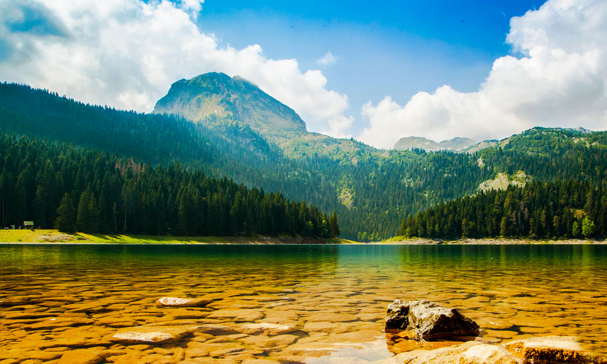
Montenegro
Черногория – небольшое государство на Балканском полуострове знают как Монтенегро, но на родном языке местного населения правильно будет сказать Црна Гора. Массив Ловчен, который когда-то именовали той самой «черной горой», возвышается над Которским заливом – самой крупной бухтой Адриатического моря – и уже больше полувека является национальным парком. Несмотря на то, что протяженность сухопутных границ составляет всего 625 километров, соседей у нее пятеро: Албания, Босния и Герцеговина, Хорватия, Сербия и частично признанная республика Косово.
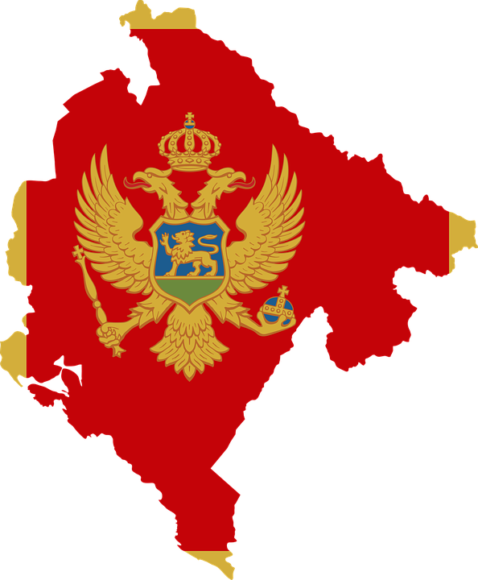
Черногория – государство настолько компактное, что, например, в границах агломерации Большой Нью-Йорк могло бы с комфортом разместиться дважды. При этом на территории площадью 13 812 кв. км живет всего 622 тысячи человек: черногорцы, сербы, боснийцы, албанцы, цыгане, хорваты и представители других национальностей.
Черногория – вовсе не Балканский аналог высокогорного Непала, большая часть страны расположена на Динарском нагорье. Центральные регионы, включая два крупнейших города, Подгорицу и Никшич, лежат в относительно ровной котловине Скадарского озера. Лишь на северо-востоке, где проходит граница с Албанией и Косово, высится гряда Северо-Албанских Альп. Склоны гор Проклетие, как еще называют этот массив, до высоты 1700–1800 метров покрыты лиственными и хвойными лесами. 8% территории республики считаются природоохранными территориями.
Черногория – вовсе не Балканский аналог высокогорного Непала, большая часть страны расположена на Динарском нагорье. Центральные регионы, включая два крупнейших города, Подгорицу и Никшич, лежат в относительно ровной котловине Скадарского озера. Лишь на северо-востоке, где проходит граница с Албанией и Косово, высится гряда Северо-Албанских Альп. Склоны гор Проклетие, как еще называют этот массив, до высоты 1700–1800 метров покрыты лиственными и хвойными лесами. 8% территории республики считаются природоохранными территориями.
Города Черногории
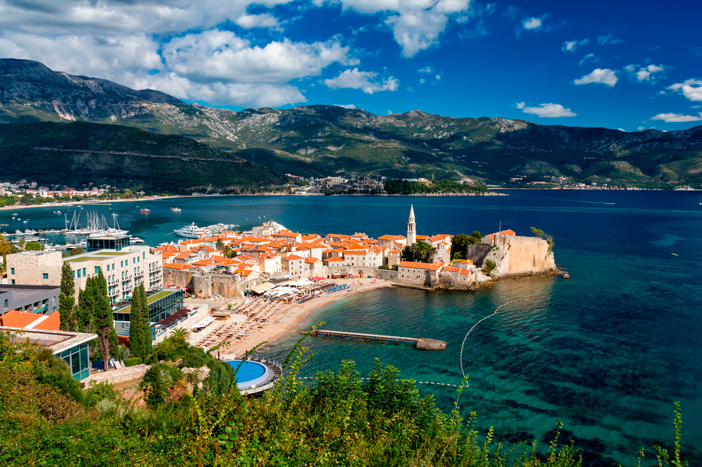
Будва
В центральной части адриатического побережья,популярный приморский курорт.
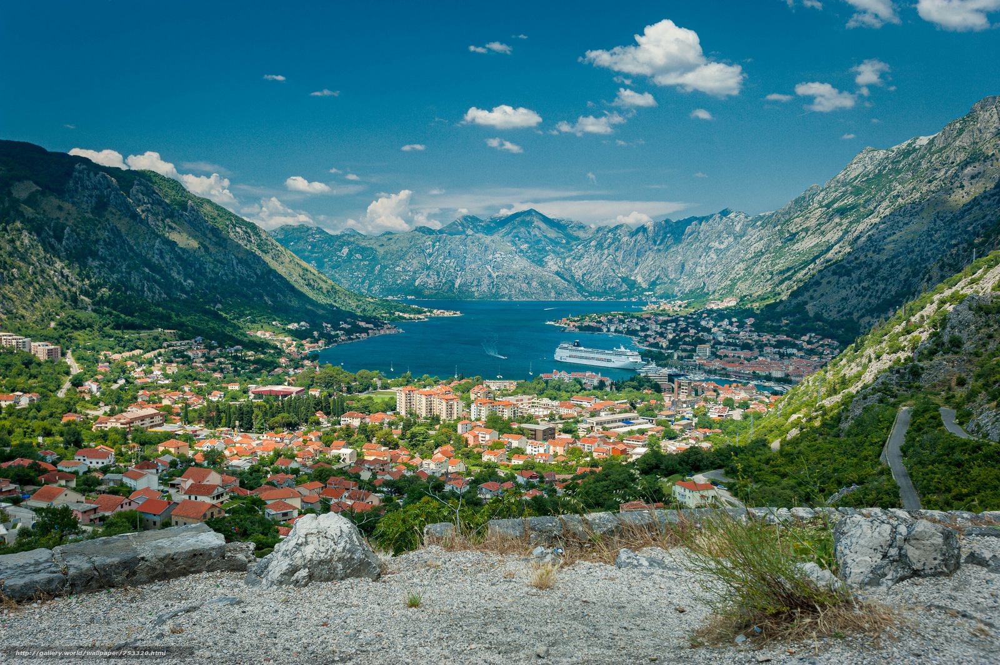
Котор
Один из морских портов Черногории.
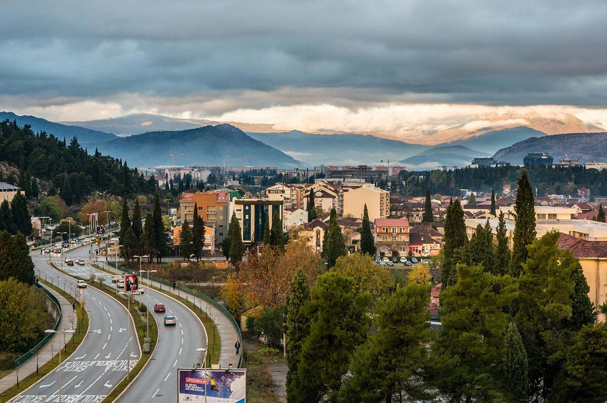
Подгорица
Одна из редких мировых столиц, где до сих пор обходятся без «Макдональдса».
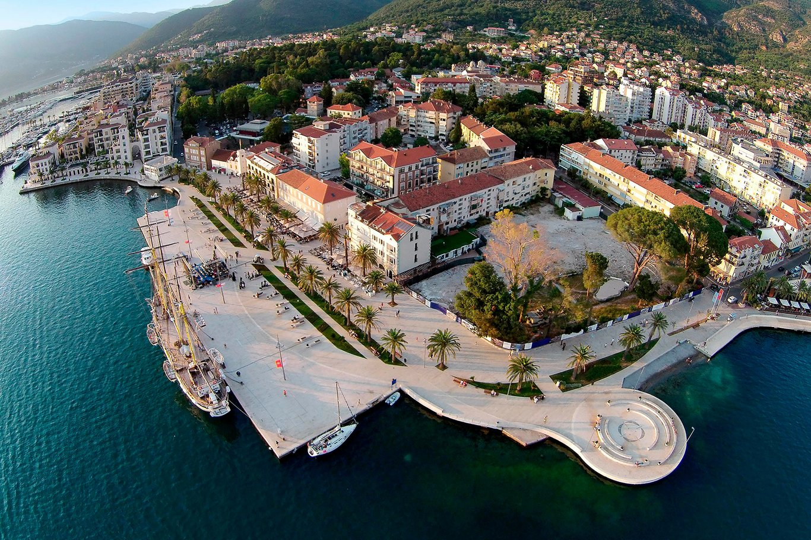
Тиват
Воздушные ворота страны.
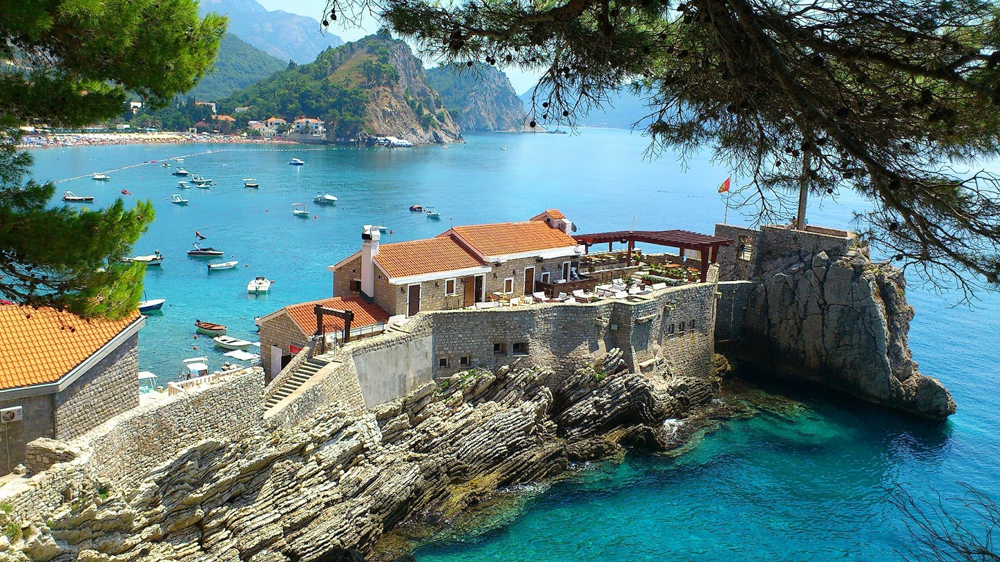
Петровац
Один из лучших морских курортов Черногории.
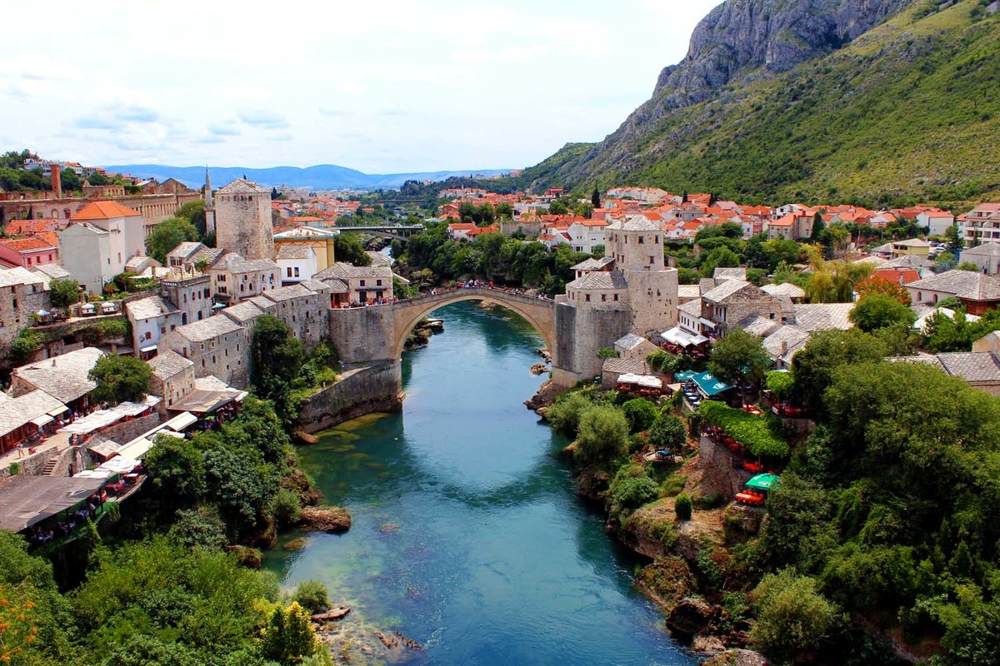
Цетинье
Был столицей на протяжении 500 лет.
Природа
Климат основной части страны умеренно-континентальный, а побережье Адриатики принадлежит к средиземноморской зоне, для которой характерно продолжительное и относительно сухое лето со средними температурами +23–25°С. Это позволяет открывать курортный сезон в конце апреля и активно принимать отдыхающих до конца октября.
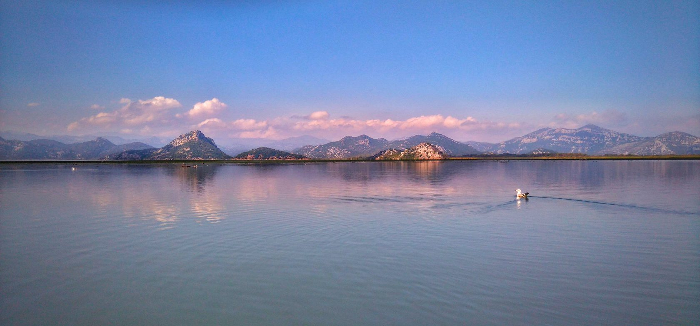Самые приятные времена года в Черногории — весна и осень: начиная с конца марта, когда снег и холода уходят даже из горных районов, до начало июня или сентябрь-октябрь, когда летний поток отдыхающих схлынул и деревья покрылись золотом, но море еще теплое и в нем можно купаться. Июль и август станут лучшими месяцами лишь для тех, кто любит толпы народа и веселый семейный отдых. В горах в июле и августе температура гарантированно будет умеренной.
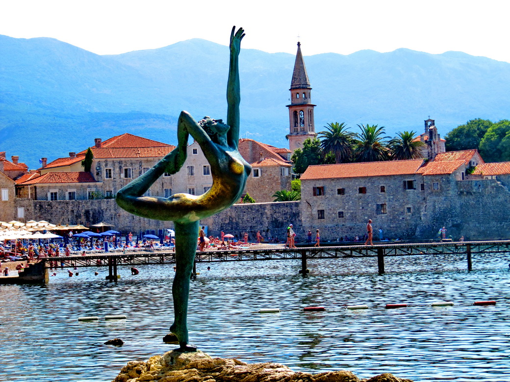
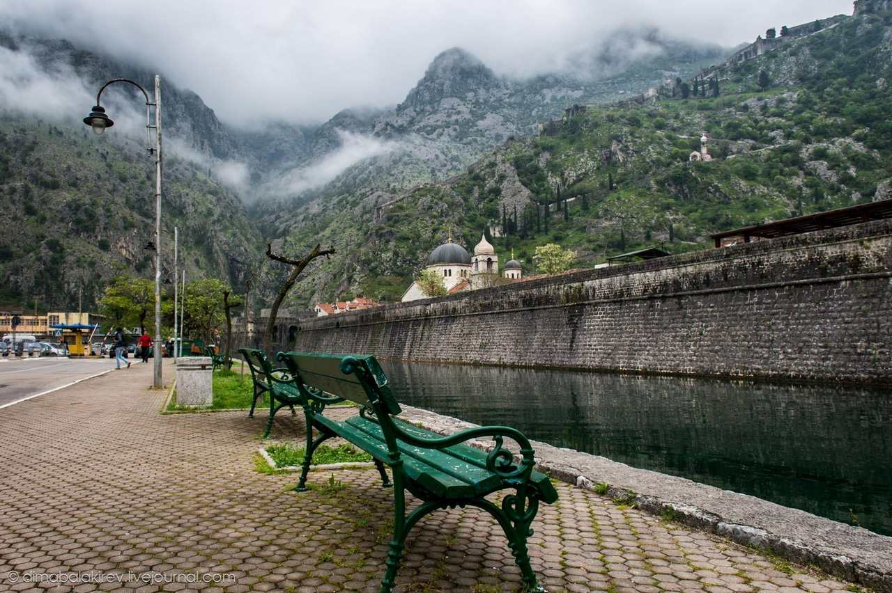
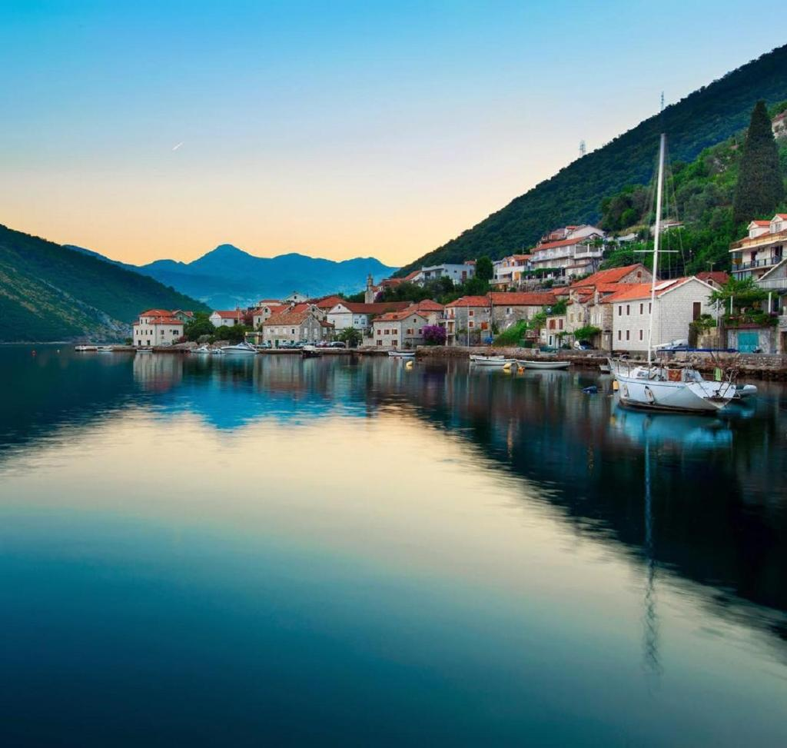
Видео
Оставьте заявку
Если вы желаете узнать подробности о турах в страну,эксурсиях по городам и прейскурант цен, отправьте нам сообщение, и в ближайшее время мы ответим.